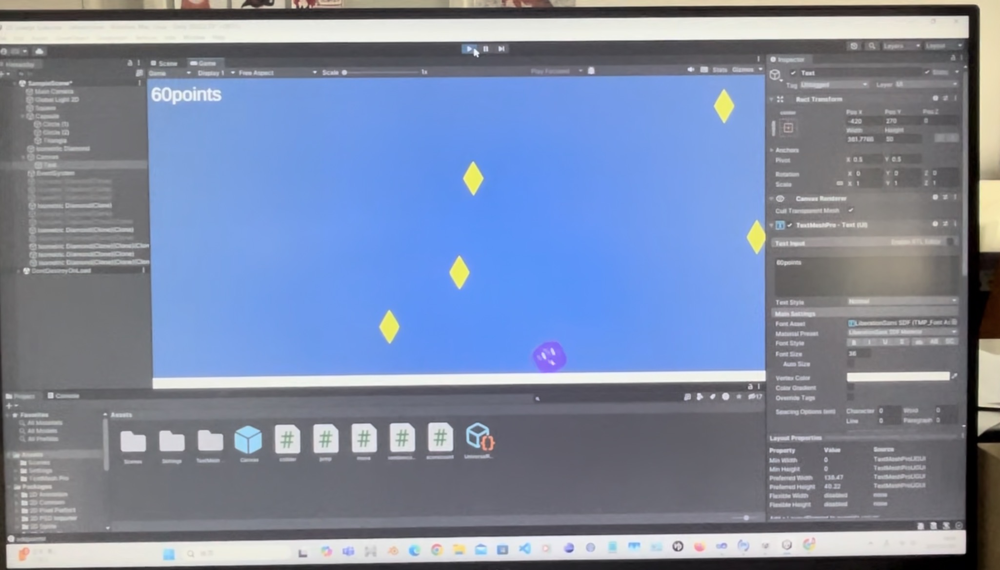
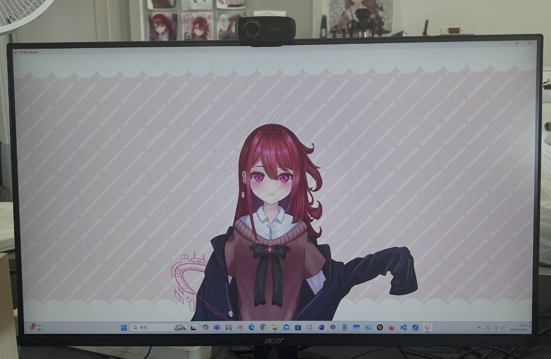
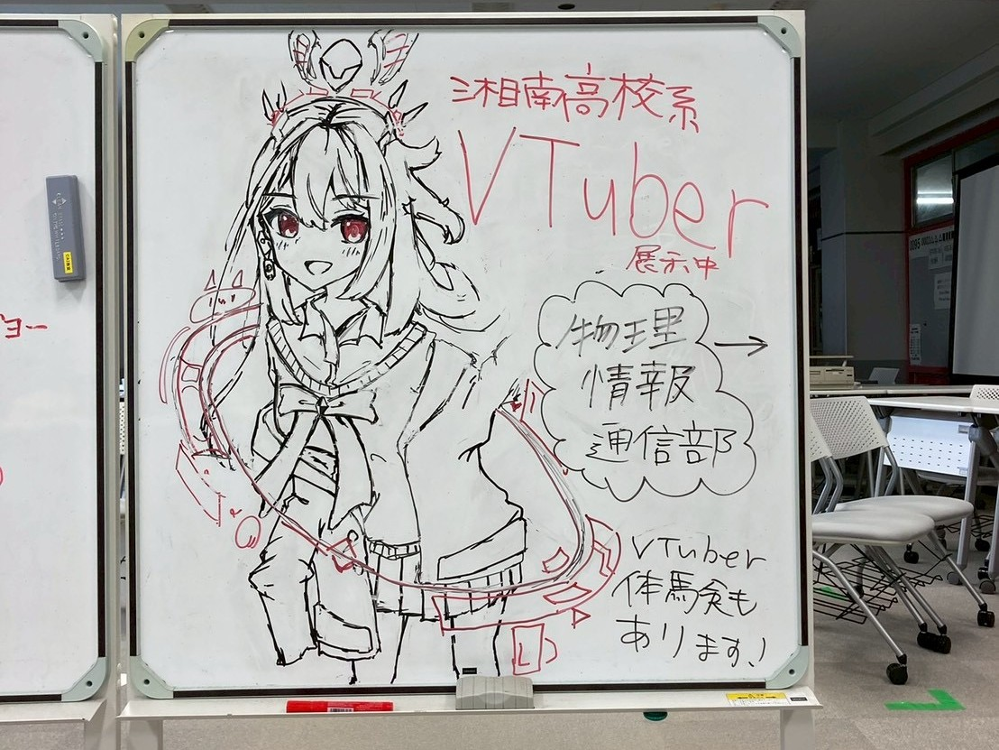
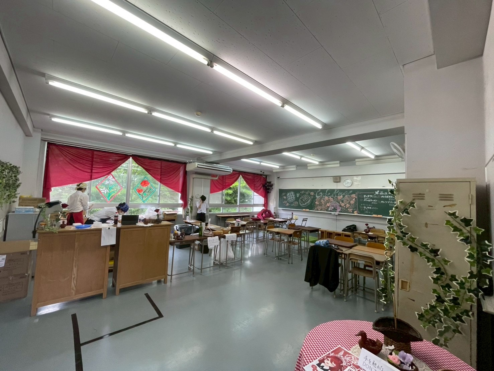

活動内容について
活動内容
物情の活動内容について説明していきます
物情は名前から活動内容を予想するのが難しい部活ランキング上位に入ってくる部活だと思いますが、その活動内容はいたってシンプル！ただやりたいことをやるだけです！
特に決まった活動内容や時間があるわけではありませんが、ゲームをやったり友達と勉強しに来たり…みんながそれぞれやりたいことを出来る空間になっています。
特に、パソコンを使った活動を自由にできることが物情の強みなので、プログラミングやVtuber運営などに興味のある人は是非、入部を検討してみてください！


文化祭での活動内容
文化祭での活動内容についてです（※一例です。）
- カフェでの裏方のお仕事！
- カフェでメイドのお仕事！？
- それまでの活動で制作した作品の展示 など…


物情は例年文化祭でオンラインパートを担当することになっており、物情とオンラインパートそれぞれで異なる出し物をすることもあります。
2026年度は、オンラインパートと物情合同でメイドカフェを経営しており、数年前から始まったメイド喫茶の運営も伝統になりつつあります…
部活で制作した作品などがあれば、その展示の場を設けることも出来るので、物情に入れば自分たちの創作物をたくさんの人達に届けることもできます！
入部してできるコト
入部して出来る事の一覧です
- Vtuber赤木愛兎の運営
- 某家庭用ゲームやパソコンに入っているゲーム
- 豊富な種類の技術書を使ったプログラミング学習
- 部室にある機材をつかった簡単な調理
- 休憩スペースで寝る！ etc…
物情では自分たちのやりたいことを自由にできる環境が整っており、誰でも日常から抜け出して新しい挑戦を始めることができます！
他ではできない体験を出来る物情は、三兎を追う湘南生にとって非常に貴重な存在であり、かけがえのない居場所となるでしょう。
物情は今後も、そんな日常からの非常口であり続けることを目指して活動を続けていきます！